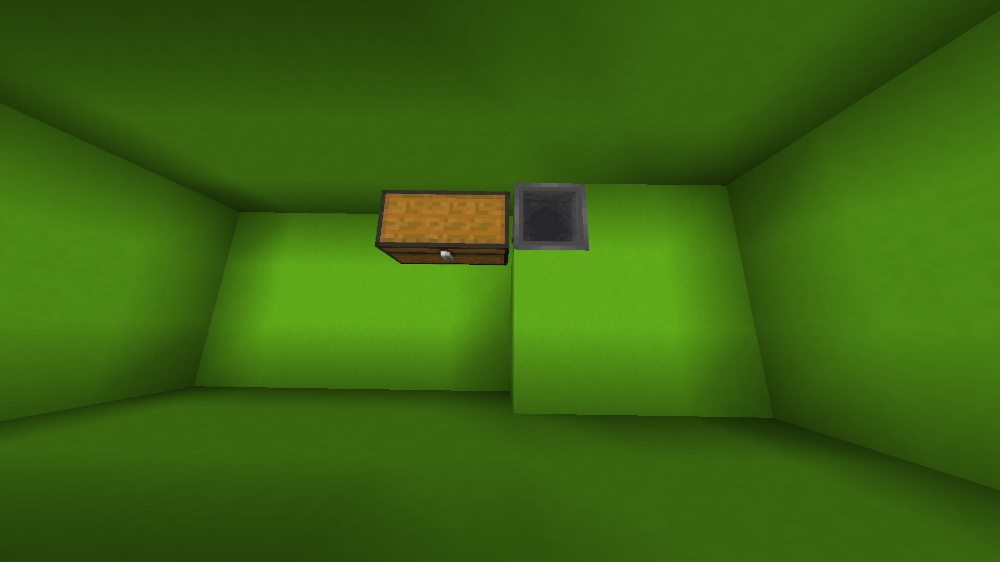
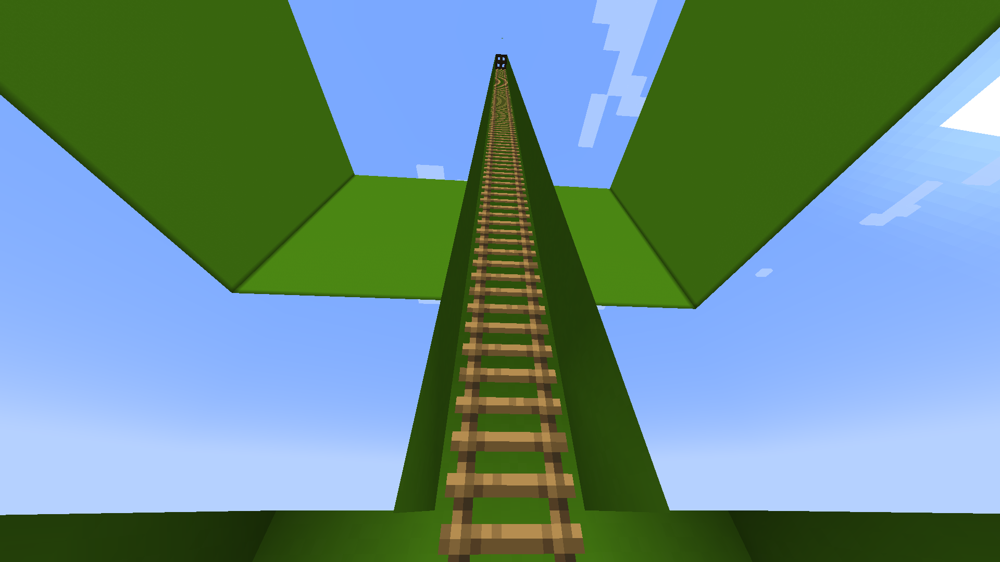
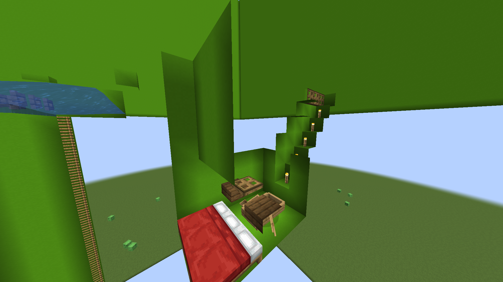
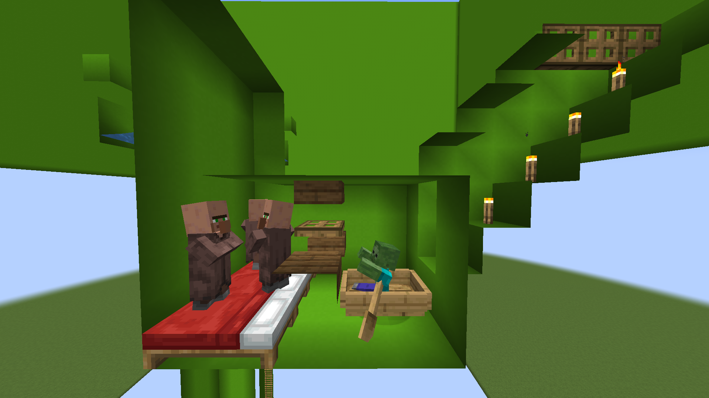
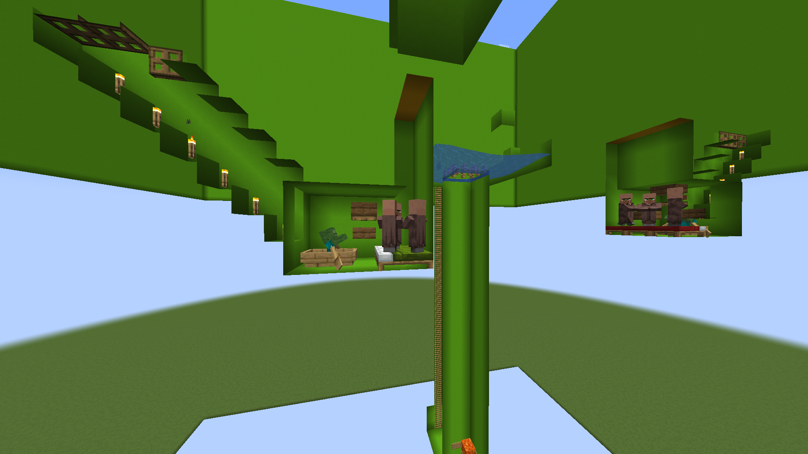
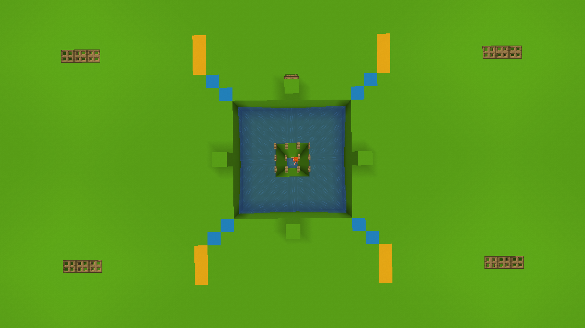

This farm consists of four identical modules, stackable up to four with a shared center.
For one module, you will need three villagers and one zombie.
The farm is located in the ground.
The resources needed to build all 4 modules of the farm are located in the chest above.
Step 1
Dig a 3x3 hole that is 2 blocks deep.
On the fourth block from the edges of the hole, place a block at the center.
Choose a quadrant and lower it by 2 blocks.
Place 8 open face gates on the initial 3x3 center, leaving the center free.
Dig a 30-block hole below the fence gates.
Step 2
Choose one side at the bottom and dig a 3x3x3 extension, going one block down.
On the right side of the extension, place a chest.
Dig a block to the right of the big hole to place a hopper connected to the chest.
One block above the hopper, place a sign on the wall.
Place two signs on both walls of the hole to contain the lava.

Step 3
Place the lava in the hole.
In the opposite corner on the ground, place water.
Block off the extension, allowing the chest to stay open, by placing a trapdoor or stairs.
Ensure that the big hole remains 3x3 in size.
Step 4
On the deeper wall of the extension,center, dig to the surface using ladders.
On the top place a trapdoor to keep mobs out.

Step 5
On the surface, above the 2-deep hole, dig a 3-wide, 7-deep hole diagonally from the corner.
Away from the center, dig a 3x3x2 extension.
Place three beds against the wall, with the opening at the top.
On the wall, place two slabs at the bottom half of the block and one slab above it.
Extend the extension by another 2 blocks behind the slabs and trapdoor.
Dig a staircase to the surface on the deeper wall.
Place torches on each stair except the top one.

Step 6
Lure three villagers and a zombie into their designated places.
After nightfall, iron golems should start spawning.
After that's done cover the 3x1 hole above the villagers with solid blocks.

Step 7
To expand the farm, dig into the other quadrants and place water in each one.
Mirror the villager cell so that they are pointing away from the drop chute.

Top view
After expanding to its full potential, it can produce 1,200 iron ingots per hour.
